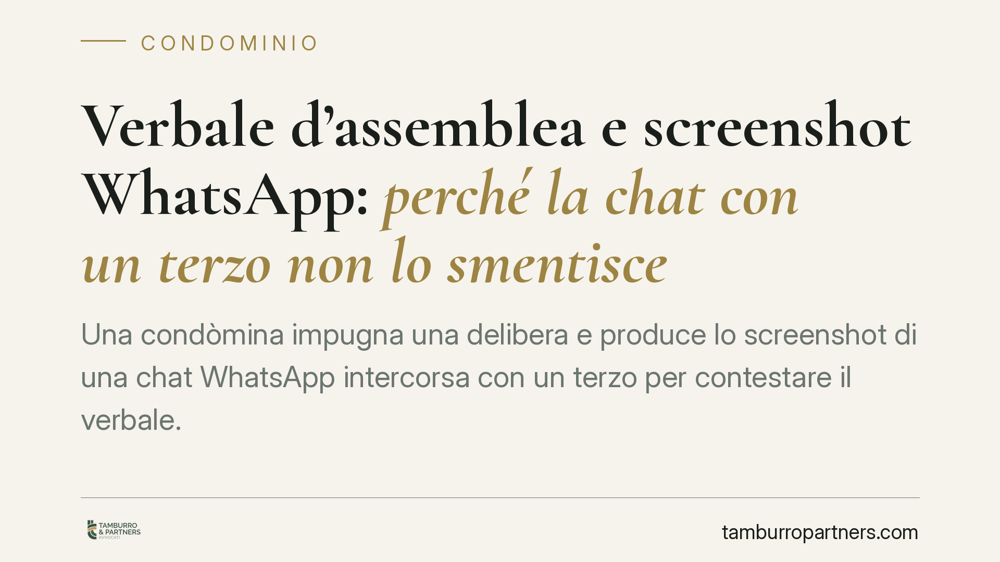

Verbale d'assemblea e screenshot WhatsApp: perché la chat con un terzo non lo smentisce
Una condòmina impugna una delibera e produce lo screenshot di una chat WhatsApp intercorsa con un terzo per contestare il verbale. Secondo i giudici d'appello quella conversazione non è attribuibile al condominio, non va disconosciuta e non intacca la presunzione di veridicità del verbale. Un caso utile per capire il valore probatorio delle riproduzioni informatiche nel contenzioso condominiale.

Il caso
Una condòmina impugna una delibera assembleare lamentando che il verbale non rispecchierebbe quanto effettivamente accaduto in assemblea. A sostegno produce lo screenshot di una conversazione WhatsApp intercorsa tra lei e un terzo soggetto, nella quale si darebbe conto di una diversa ricostruzione dei fatti.
Il tema è classico: può una chat privata, estranea agli organi condominiali, superare quanto cristallizzato nel verbale redatto in assemblea? La risposta dei giudici d'appello è negativa, e le ragioni sono tecniche.
> Nota sugli estremi. La pronuncia qui commentata è stata richiamata da fonti di stampa specializzata come decisione della Corte d'Appello di Brescia. Gli estremi esatti (numero, sezione e data di deposito) vanno verificati sulla fonte ufficiale prima di qualsiasi utilizzo in sede difensiva. Il principio che segue ha comunque fondamento consolidato nel diritto vigente.
Inquadramento normativo
Occorre tenere distinti due piani probatori che spesso vengono confusi.
Primo piano: la scrittura privata (artt. 214 e 215 c.p.c.). Il disconoscimento della scrittura privata riguarda la paternità del documento, cioè la riconducibilità della sottoscrizione o della scrittura al soggetto a cui è attribuita. Perché un documento debba essere disconosciuto da una parte, deve prima essere a quella parte ascrivibile. Una chat tra la condòmina e un terzo non è scrittura proveniente dal condominio: il condominio non ne è autore e non ha alcun onere di disconoscerla. Semplicemente, non lo riguarda sul piano della provenienza.
Secondo piano: la riproduzione informatica (art. 2712 c.c.). Lo screenshot di una chat è una riproduzione meccanica o informatica. L'art. 2712 c.c. stabilisce che tali riproduzioni formano piena prova dei fatti e delle cose rappresentate se colui contro il quale sono prodotte non ne disconosce la conformità ai fatti o alle cose medesime. È un disconoscimento diverso: non attiene alla paternità, ma alla corrispondenza tra riproduzione e realtà. Anche qui, però, il disconoscimento spetta a chi è controparte rispetto a quel documento. Il condominio non è parte della conversazione e non è tenuto a contestarne la conformità.
Il verbale assembleare. Il verbale redatto dall'amministratore (o dal segretario) e sottoscritto da presidente e segretario gode di una presunzione di veridicità circa quanto in esso attestato. Per superarla non basta una prova qualsiasi: serve una contestazione circostanziata e un principio di prova idoneo. Una chat privata con un estraneo, non riconducibile né agli organi condominiali né al verbalizzante, non raggiunge questa soglia.
Implicazioni pratiche
Per il singolo condòmino il messaggio è netto: se si vuole contestare il contenuto di un verbale, il materiale probatorio deve avere un aggancio con l'assemblea e con chi vi ha partecipato, non con conversazioni esterne.
Lo strumento più efficace resta la messa a verbale seduta stante del proprio dissenso o della propria diversa ricostruzione dei fatti. Ciò che non entra nel verbale è difficilissimo da recuperare dopo.
Va poi tenuto presente il profilo temporale, che è spesso decisivo. L'impugnazione delle delibere assembleari annullabili è soggetta al termine di decadenza di trenta giorni previsto dall'art. 1137 c.c. Il *dies a quo* decorre dalla data della deliberazione per i condòmini presenti e dissenzienti, e dalla data di comunicazione del verbale per gli assenti. Scaduto il termine, la delibera annullabile diventa definitiva: nessuna prova, per quanto solida, potrà più essere fatta valere.
Cosa fare in concreto
- Fai verbalizzare seduta stante ogni dissenso, riserva o diversa ricostruzione: pretendi che la richiesta risulti a verbale.
- Verifica con precisione il dies a quo dei trenta giorni (data della delibera se eri presente dissenziente; data di comunicazione del verbale se eri assente).
- Se intendi impugnare, è opportuno verificare tempestivamente la sussistenza di vizi effettivi e documentabili, prima dello scadere del termine di decadenza.
- Non affidarti a chat o messaggi con terzi estranei all'assemblea come prova del contenuto della riunione: non vincolano il condominio.
- Conserva convocazioni, allegati e comunicazioni ufficiali: sono i documenti che contano sul piano della provenienza.
Conclusione
La decisione conferma un criterio di ordine. Il verbale assembleare non si smonta con documenti estranei al condominio, per quanto suggestivi. Chi vuole far valere una versione diversa dei fatti deve costruirla dentro l'assemblea e nei termini di legge, non dopo e altrove.
Ogni condominio ha una storia a sé.
Se gestisci un'amministrazione e vuoi un confronto su una specifica questione condominiale, scrivi allo studio. Ti rispondiamo entro un giorno lavorativo.